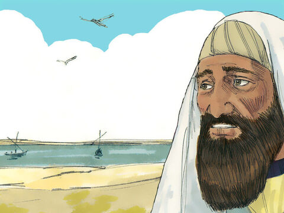

Lord Jesus Heals A Jairus's Daughter
While he spake these things unto them, behold, there came a certain ruler,
and worshipped him, saying, My daughter is even now dead: but come and
lay thy hand upon her, and she shall live.
And Jesus arose, and followed him, and so did his disciples.
And when Jesus came into the ruler's house, and saw the minstrels and the people making a noise,
He said unto them, Give place: for the maid is not dead, but sleepeth. And they laughed him to scorn.
But when the people were put forth, he went in, and took her by the hand, and the maid arose.
And the fame hereof went abroad into all that land.
Matthew 9:18-19 & Matthew 9:23-26
- 